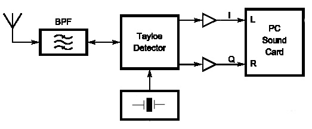
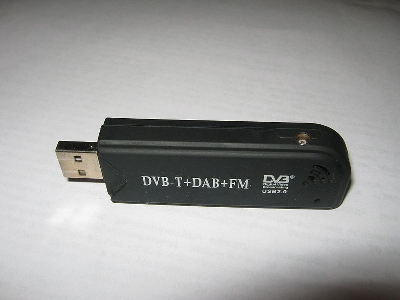

SDR - Software Defined Radio.
Совершенно очевидно, что в мире передачи и обработки информации бал правит цифра. Микропроцессоры, сигнальные процессоры, персональные компьютеры — работа всех этих устройств основана на цифровой технике. Стремительный прогресс этой техники творит поистине чудеса, к которым пользователи привыкают так быстро, что уже не отдают себе отчет в том, какими гибкими и мощными устройствами они пользуются. Возможно, некоторые пользователи даже не замечают, как эти устройства меняют их привычный образ жизни или хотя бы досуг.
Если говорить о радиолюбителях, то они уже давно применяют персональные компьютеры в различных аспектах своего хобби — и в радиосвязи, и при конструировании аппаратуры, и для подготовки технической документации, и т.д. Однако до недавнего времени персональный компьютер играл хотя и важную, но все же вспомогательную роль на любительской радиостанции. Так было до появления software-defined radio (SDR) — системы радиосвязи, в которой программное обеспечение используется как для модуляции, так и для демодуляции радиосигналов. SDR меняет приоритеты, и персональный компьютер становится ядром любительской радиостанции. При использовании SDR практически весь объем работ по обработке сигнала перекладывается на программное обеспечение, которое запускается на персональном компьютере или управляет работой некоторых конкретных специализированных микропроцессорных устройств, предназначенных для обработки сигнала. Цель такого подхода — создать систему, которая может принимать и передавать практически любые радиосигналы с помощью программного обеспечения, которое априори является гибким и адаптивным.
В настоящее время SDR широко применяются в военной и сотовой связи, где в режиме реального времени требуется поддержка разнообразных изменяющихся радиопротоколов. В режиме приема SDR может обеспечить более высокую эффективность, чем при использовании традиционных аналоговых методов, т.к. при цифровой обработке сигналов их фильтрация близка к идеальной. Кроме того, с помощью программных алгоритмов могут быть реализованы такие функции, которые очень сложно получить при аналоговой обработке.
Идеальная реализация SDR-приемника — это подключение антенны непосредственно к аналого-цифровому преобразователю (АЦП), соединенному с мощным компьютером. В таком случае программное обеспечение, запущенное на компьютере, обеспечивало бы обработку поступающего потока данных и преобразовывало бы их в требуемую форму. Идеальный SDR-передатчик функционировал бы аналогично. Программное обеспечение формировало бы поток данных, который поступал бы в цифро-аналоговый преобразователь (ЦАП), подключенный к антенне. Однако современная технологическая база не позволяет реализовать такую идею. Доступные АЦП еще недостаточно быстры для работы в широкой полосе радиоспектра или не имеют достаточного динамического диапазона, чтобы оперировать с сигналами, имеющими огромную разницу уровней в этом спектре.
В настоящее время реализация SDR возможна пока только на очень низких частотах (десятки килогерц), поэтому в реальных устройствах проблема высококачественной оцифровки принимаемых ВЧ сигналов решается их переносом на низкую частоту. Для этого используются смеситель и опорный генератор. Таким образом, требуется определенное аналоговое оборудование, чтобы направить часть спектра частот на обработку в компьютере. Учитывая огромные возможности, которые заложены в SDR, по-видимому, в ближайшем будущем эта технология займет доминирующее положение в технике радиосвязи. В профессиональных реализациях SDR аналоговая часть, как правило, строится по супергетеродинному принципу, а в радиолюбительских устройствах широкое применение находит принцип прямого преобразования. Хотя этот принцип был предложен очень давно только появление SDR, возможно, действительно обеспечит массовое применение прямого преобразования в технике радиосвязи.
На протяжении многих лет среди радиолюбителей бытует разное отношение к приемникам прямого преобразования (Direct Conversion Receiver — DCR) — от полного восторга до унылого скепсиса. Безусловно, простота схемы, минимальное число пораженных точек и чистота звучания являются объективными достоинствами приемника прямого преобразования. Однако отсутствие односигнального приема из-за наличия зеркального канала по низкой частоте ограничивает область применения радиолюбительских DCR, в основном, экспериментальными рамками. Используя фазовый метод, зеркальный канал (нерабочую боковую полосу) в DCR можно довольно легко подавить на 40 дБ. Однако добиться подавления нерабочей полосы более 60 дБ, что типично для супергетеродинных приемников среднего класса с кварцевыми и электромеханическими фильтрами, в DCR оказывается значительно сложнее. На помощь приходит “интеллектуальная” цифровая обработка сигнала.
Радиолюбительский журнал QEX опубликовал в 2002 году несколько статей под общим названием «A Software-Defined Radio for the Masses». Автором которых является Gerald Youngblood K5SDR (ex AC5OG). В статьях рассказано, что такое программно зависимое радио (SDR), принцип работы и построения таких устройств. Публикация QEX вызвала немалый интерес радиолюбителей всего мира к этой технике. На самом деле, при достаточно не сложном схемном решении, в сочетании с возможностями современных компьютеров возможно построение приёмника или трансивера с достаточно высокими параметрами и широкими возможностями.
Сейчас традиционная схемотехника SDR выглядит следующим образом. Аналоговая часть выполнена по принципу прямого преобразования. Принимаемый сигнал через диапазонный полосовой фильтр (ДПФ) поступает на два смесителя, на которые от опорного генератора приходят сигналы одинаковой амплитуды, но с относительным сдвигом фазы 90о. Относительный сдвиг фазы между сигналами I (in-phase) и Q (quadrature) на выходе смесителей в этом случае также составляет 90о, а частота сигналов — приблизительно от 0 до 20 кГц. Если подать эти сигналы на звуковую карту персонального компьютера, в котором НЧ фазовращатель реализован программно, то можно выделить используемую боковую полосу и подавить нерабочую. Именно этот принцип фазовой селекции, но реализованный аппаратно, часто применяется в любительских однополосных DCR. Тем не менее, даже для достижения подавления нерабочей полосы на 40 дБ требуется высокая точность поддержания фазы и амплитуды сигналов I и Q. Отклонение фазы не должно превышать 1о, а амплитуды — 0,1 дБ.
Еще сложнее достичь 60 дБ подавления нерабочей полосы: сигналы I и Q должны иметь точность 0,1о по фазе и 0,01 дБ по амплитуде! А ведь 60 дБ подавления нерабочей полосы легко достигается в супергетеродине при использовании кварцевого фильтра в тракте промежуточной частоты. Если применить в SDR опорный генератор, выходные сигналы которого формируются цифровым квадратурным фазовращателем, то в этом случае автоматически получаются точные фазовые соотношения между сигналами I и Q в широкой полосе частот. Казалось бы, можно, ни о чем не задумываясь, подавать эти сигналы на входы звуковой карты компьютера для последующей обработки. Тем не менее, в реальных устройствах сигналы I и Q подвержены влиянию многих дестабилизирующих факторов. Даже если принять, что сигналы гетеродина точно сбалансированы, может присутствовать фазовый сдвиг, вызванный наводками от антенны, а также в тракте прохождения сигнала — в ВЧ цепях, диапазонных полосовых фильтрах, смесителях, малошумящих предварительных НЧ усилителях, ФНЧ и т.д. Любой из этих узлов может ухудшить идентичность фазовых и амплитудных соотношений между сигналами I и Q. Изменения фазы и амплитуды могут быть очень значительными на широких любительских диапазонах и значительно ухудшить подавление нерабочей боковой полосы и, соответственно, эффективность работы приемника.
Указанные проблемы преодолеваются в SDR программными методами. Для этого предусматривается автоматическая или ручная коррекция амплитуды и фазы сигналов I и Q, что обеспечивает подавление нерабочей полосы до 90 дБ! Правда, эта функция, как правило, эффективно работает только на очень узких участках (обычно от 3 до 4 кГц), а потом вновь требуется коррекция. В результате этот процесс приходится периодически повторять как при перестройке внутри любительского диапазона, так и при смене диапазона. Выходом из этой ситуации является формирование встроенной в компьютерную программу таблицы, в которую тем или иным способом заносится информация о расхождении фазовых и амплитудных соотношений между сигналами I и Q на определенных частотах (например, программа сканирует диапазоны и, выбирая некоторые мощные сигналы как опорные, подбирает наиболее оптимальные фазовые и амплитудные соотношения). При перестройке по диапазону или смене диапазона данные о требуемой коррекции фазы и амплитуды выбираются из таблицы, что позволяет программе поддерживать очень высокое подавление нерабочей полосы
 Имея широкополосный спектр на входе звуковой карты , грех не использовать такую возможность для панорамного анализатора. Многие SDR программы имеют панорамный анализатор спектра. Далее происходит процесс выделения полезного сигнала, фильтрация по соседнему каналу, обработка, усиление, детектирование и т.д..
Следует сказать, "фиксированная" ПЧ 11 кГц используется для трансивера SDR-1000, где перестройка по частоте и диапазонам осуществляется традиционно - синтезатором. Простые SDR приёмники имеют "перестраиваемую" ПЧ., некоторые говорят "нулевая" ПЧ. Как бы это не называлось, при фиксированной частоте приёмника происходит программная перестройка по широкополосному НЧ спектру и выделение полезных сигналов. Более подробно эти моменты будут затронуты в соответствующих разделах.
Подавление зеркального канала приема, несмотря на использовании такой низкой ПЧ вполне приличное, на уровне 70-100дБ. Это достигается, как указывалось выше, применением цифровых фазовращателей.
Для DSP обработки используются приличные мощности компьютера и соответствующего программного обеспечения, в итоге достигаются очень неплохие параметры приемного тракта и великолепные возможности. К примеру, простой однодиапозонный SDR приёмник с кварцевым задающим генератором на фиксированную частоту способен работать в участке диапазона шириной 48 или 96кГц (параметр определяется возможностями звуковой карты, перестройка по частоте происходит программным способом), имеет панорамный анализатор, DSP фильтры с различной полосой пропускания и прямоугольностью достигающей значения 1.05, традиционные для современных трансиверов и приёмников функции NB, NR, ANF. Как правило SDR приёмник способен обрабатывать и принимать практически все виды модуляции CW, LSB, USB, AM, FM, а с помощью дополнительного программного обеспечения и цифровые виды связи как радиолюбительские так и коммерческие, например DRM цифровое радиовещание.
Что касается передающей части программно-зависимого радио, то в традиционных радиолюбительских режимах CW и SSB, как упоминалось выше, используется формирование сигнала методом прямого преобразования. Низкочастотный сигнал, предварительно обработанный DSP компьютера, с разностью фаз 0 и 90 градусов подаётся с выхода звуковой карты на квадратурный смеситель, на этот же смеситель поступает фазированный сигнал с синтезатора, в итоге на выходе SDR получается однополосный сигнал. Опять же, за счёт применения цифровой обработки, достигаются высокие параметры по подавлению неиспользуемой боковой полосы и по спектру сигнала.
Параметры избирательности, динамический диапазон программно-зависимого радио вполне приличные. По некоторым из них SDR устройства вполне могут соперничать с трансиверами и приёмниками достаточно высокого класса. Следует отметить, что основная нагрузка в SDR приёмнике лежит не на входном смесителе, который, как правило, имеет достаточно высокие параметры, а на звуковой карте компьютера. Именно шумовые и динамические характеристики звуковой карты имеют важное значение в общих характеристиках приёмного тракта. Простые эксперименты с SDR техникой вполне можно проводить используя обычные звуковые карты и конечно при более серьёзном использовании SDR следует применять качественные звуковые карты. Требования к мощности компьютера напрямую зависят от используемого программного обеспечения. Некоторым программам вполне достаточно вполне простого по современным меркам компьютера, для других, как например PowerSDR требуется хороший компьютер с тактовой частотой процессора желательно не менее 1.5ГГц.

Возможности применения SDR техники достаточно разнообразны. Это может быть приёмник, трансивер, панорамный анализатор спектра или SDR тракт к уже имеющемуся традиционному трансиверу, что заметно расширит возможности последнего. Следует отметить тот факт, что компьютерные технологии и программное обеспечение быстро развиваются, соответственно и Software Defined Radio способно развиваться вместе с ними. Модернизировав в очередной раз свой компьютер или установив свежую программу, вы тем самым меняете параметры и возможности вашего SDR устройства.
Возможно, не всем радиолюбителям, особенно старой закалки, придется по душе диктуемая SDR необходимость жесткой привязки к персональному компьютеру. Для приверженцев традиционной приемо-передающей аппаратуры, заполняющей поверхность стола и имеющей большие ручки, измерительные приборы и светящиеся шкалы, представить себе радио в виде программы точно не привлекательно. Однако преимущества SDR так весомы, что игнорировать их просто недальновидно. Кроме того, радиолюбители всегда отличались стремлением овладеть новыми технологиями и познать неизведанное.
В 2013 году появилась возможность использовать для создания SDR дешёвые (<20$) DVB-T USB приёмники, использующие контроллеры Realtek RTL2832U и тюнеры Elonics E4000 или Rafael Micro R820T. Они использовались для создания широкополосных приёмников разных типов сигналов (FM, ADS-B, D-STAR, АИС), радиотелескопа. Могут использоваться совместно с GNU Radio. К 2016 году стоимость таких приёмников снизилась до 7 долларов.
Главная | О своём городе | Антенны | Радиосвязь на КВ | Радиосвязь на УКВ | Гостевая
Copyright © 2017 Сайт радиолюбителей г. Климовичи | Design studio «Zurbagan»